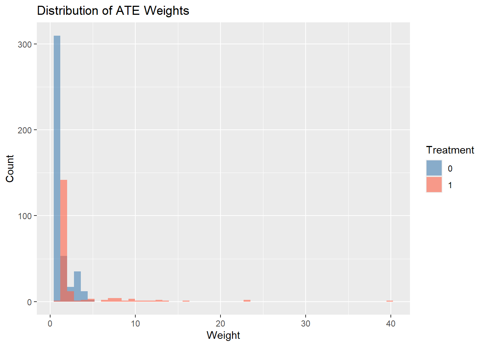

Inverse probability weighting (IPW), also known as propensity score weighting, is an alternative to matching that uses the propensity score to create a pseudo-population where treatment is independent of measured confounders (Rosenbaum 1987; Hirano, Imbens, and Ridder 2003).
Rather than discarding unmatched units, IPW reweights the sample so that treated and control groups have similar covariate distributions. This approach:
Fit a logistic regression (or more flexible model) to predict treatment:
# R exampleps_model <-glm(treatment ~ age + education + income + gender, data = df, family =binomial(link ="logit"))df$propensity <-predict(ps_model, type ="response")
── Attaching core tidyverse packages ──────────────────────── tidyverse 2.0.0 ──
✔ dplyr 1.1.4 ✔ readr 2.1.5
✔ forcats 1.0.0 ✔ stringr 1.5.1
✔ ggplot2 3.5.2 ✔ tibble 3.2.1
✔ lubridate 1.9.4 ✔ tidyr 1.3.1
✔ purrr 1.0.4
── Conflicts ────────────────────────────────────────── tidyverse_conflicts() ──
✖ dplyr::filter() masks stats::filter()
✖ dplyr::lag() masks stats::lag()
ℹ Use the conflicted package (<http://conflicted.r-lib.org/>) to force all conflicts to become errors
library(cobalt)
cobalt (Version 4.6.2, Build Date: 2026-01-29)
# Download the lalonde data data <- MatchIt::lalonde# Step 1: Estimate propensity scoresps_model <-glm(treat ~ age + educ + race + married + nodegree + re74 + re75,data = data,family =binomial(link ="logit"))data <- data %>%mutate(propensity =predict(ps_model, type ="response"))# Step 2: Calculate IPW weightsdata <- data %>%mutate(# ATE weightsweight_ate = treat / propensity + (1- treat) / (1- propensity),# ATT weights weight_att = treat + (1- treat) * propensity / (1- propensity),# Stabilized ATE weightsweight_ate_stab = (treat *mean(treat) / propensity) + ((1- treat) * (1-mean(treat)) / (1- propensity)) )# Step 3: Check balancebal.tab(treat ~ age + educ + race + married + nodegree + re74 + re75,data = data,weights ="weight_ate",stats =c("m", "v"),thresholds =c(m =0.1))
Note: `s.d.denom` not specified; assuming "pooled".
Balance Measures
Type Diff.Adj M.Threshold V.Ratio.Adj
age Contin. -0.1676 Not Balanced, >0.1 0.3689
educ Contin. 0.1296 Not Balanced, >0.1 0.5657
race_black Binary 0.0499 Balanced, <0.1 .
race_hispan Binary 0.0047 Balanced, <0.1 .
race_white Binary -0.0546 Balanced, <0.1 .
married Binary -0.0944 Balanced, <0.1 .
nodegree Binary -0.0547 Balanced, <0.1 .
re74 Contin. -0.2740 Not Balanced, >0.1 0.8208
re75 Contin. -0.1579 Not Balanced, >0.1 0.9562
Balance tally for mean differences
count
Balanced, <0.1 5
Not Balanced, >0.1 4
Variable with the greatest mean difference
Variable Diff.Adj M.Threshold
re74 -0.274 Not Balanced, >0.1
Effective sample sizes
Control Treated
Unadjusted 429. 185.
Adjusted 329.01 58.33
# Visualize weightsggplot(data, aes(x = weight_ate, group =as.factor(treat), fill =as.factor(treat))) +geom_histogram(bins =50, alpha =0.6, position ="identity") +labs(title ="Distribution of ATE Weights",x ="Weight", y ="Count",fill ="Treatment") +scale_fill_manual(values =c("0"="steelblue", "1"="tomato"))

# Step 4: Estimate treatment effectate_model <-lm(re78 ~ treat, data = data, weights = weight_ate)# Robust standard errorslibrary(sandwich)library(lmtest)
Loading required package: zoo
Attaching package: 'zoo'
The following objects are masked from 'package:base':
as.Date, as.Date.numeric
coeftest(ate_model, vcov =vcovHC(ate_model, type ="HC3"))
t test of coefficients:
Estimate Std. Error t value Pr(>|t|)
(Intercept) 6422.84 366.30 17.5344 <2e-16 ***
treat 224.68 939.66 0.2391 0.8111
---
Signif. codes: 0 '***' 0.001 '**' 0.01 '*' 0.05 '.' 0.1 ' ' 1
# Alternative: Use WeightIt packagelibrary(WeightIt)W <-weightit(treat ~ age + educ + race + married + nodegree + re74 + re75,data = data,method ="ps",estimand ="ATE")summary(W)
Summary of weights
- Weight ranges:
Min Max
treated 1.172 |---------------------------| 40.077
control 1.009 |-| 4.743
- Units with the 5 most extreme weights by group:
137 124 116 68 10
treated 13.545 15.988 23.297 23.389 40.077
412 388 226 196 118
control 4.03 4.059 4.24 4.523 4.743
- Weight statistics:
Coef of Var MAD Entropy # Zeros
treated 1.478 0.807 0.534 0
control 0.552 0.391 0.118 0
- Effective Sample Sizes:
Control Treated
Unweighted 429. 185.
Weighted 329.01 58.33
Rosenbaum (1987) - Early development of propensity score methods
Hirano, Imbens, and Ridder (2003) - Efficient estimation with IPW
Robins, Hernan, and Brumback (2000) - Marginal structural models and stabilized weights
Li, Morgan, and Zaslavsky (2018) - Overlap weights for improved balance
Austin and Stuart (2015) - Comparison of propensity score methods
References
Austin, Peter C., and Elizabeth A. Stuart. 2015. “Moving Towards Best Practice When Using Inverse Probability of Treatment Weighting (IPTW) Using the Propensity Score to Estimate Causal Treatment Effects in Observational Studies.”Statistics in Medicine 34 (28): 3661–79. https://doi.org/10.1002/sim.6607.
Hirano, Keisuke, Guido W. Imbens, and Geert Ridder. 2003. “Efficient Estimation of Average Treatment Effects Using the Estimated Propensity Score.”Econometrica 71 (4): 1161–89. https://doi.org/10.1111/1468-0262.00442.
Li, Fan, Kari Lock Morgan, and Alan M. Zaslavsky. 2018. “Balancing Covariates via Propensity Score Weighting.”Journal of the American Statistical Association 113 (521): 390–400. https://doi.org/10.1080/01621459.2016.1260466.
Robins, James M., Miguel Angel Hernan, and Babette Brumback. 2000. “Marginal Structural Models and Causal Inference in Epidemiology.”Epidemiology 11 (5): 550–60. https://doi.org/10.1097/00001648-200009000-00011.